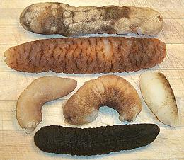
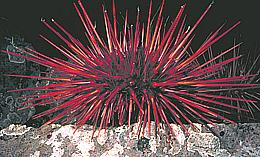

SAFARI
Users
General & History
Echinoderms first appeared in the early Cambrian period over 500 million years ago. They have neither an internal nor an external skeleton but are stiffened by hard calcified plates and spines just under the skin. While this may seem like an exoskeleton it allows the organism to grow without molting it's shell.
These creatures have no muscles to speak of but are hydraulically operated through a system of plumbing called the "water vascular system". Without muscle tissue there isn't a lot to eat in most echinoderms. The exception is the sea cucumber which has a tube like body made of gelatinous material that is a popular food item in East and Southeast Asia.
Buying, Cleaning & Cooking
Unless you are in a sushi bar you are unlikely to buy edible echinoderms except sea cucumbers. These are available in markets serving East and Southeast Asian communities. Decades ago they were sold as dried pieces in boxes, but this is not common now. Today both white and black are sold frozen in bags, or thawed in shrink wrapped trays.
There is very little to do in preparing these. Dried ones you need to soak for hours. Frozen need to be thawed, checked for any gooey stuff that should be washed out, and cut to the size you wish.
If you are in a sushi bar you can order "uni" (sea urchin reproductive organs) but there's still little to do - these are prepared "ready to serve" by seafood companys that shuck the spiny critters right after capture.
Varieties
Sea Cucumber
 [Bêche-de-mer, order Holothuroidea]
Sea cucumbers are known from the Silurian 400 million years ago, but may be even more ancient. Today they live in every marine environment from tidal to the deepest trenches, but not in fresh water or on land. They should not be called "sea slugs" because they are not mollusks.
Most sea cucumbers are less than 12 inches long, but there is one
that can grow to more than 7 feet. They are of pharmaceutical interest
(interesting toxins, mostly) and are a popular food item in Asia. They
are exported to China from all over the Indo-Pacific region and have been
badly over-fished in some areas, particularly the Pacific islands. This
has resulted in development of large aquaculture oprations in China,
Japan, Australia and elsewhere.
Details and Cooking.
Sea Urchins
 [class Echinoidea many orders, genera and species]
Sea urchins are a favorite food of sea otters and California spiny lobsters. Their reproductive organs are eaten by people, sometimes lightly cooked in French sauces, but most commonly raw, mostly in Japan, Korea, Chile and California sushi bars.
Sea Urchins are harvested in California (where they are a popular sushi), New England (where they are NOT eaten, thank you very much), Chile, Japan and other places. They are shelled in the seafood factories and the edible organs are put up in rows in little wooden or plastic trays, ready to eat.
Here in Southern California Sea urchins are highly destructive to our
economically important kelp beds, so it would be better if more people
ate them. Perhaps they would be more popular if it were widely known that
sea urchin reproductive organs contain cannabinoids and are considered
aphrodesiac as well. In Japan these organs are called "Uni" and in Chile
they are called "erizo". Go to your local sushi bar and order Uni, the
lobsters and sea otters can't handle them all without your help (yes,
I like uni and order it often).
Details and Cooking.
Photo © b0001.
Starfish
[Sea Star, class Asteroidea eight orders and numerous species]
The main culinary importance of starfish is the number of clams they eat which impacts the price and availability of clams. Starfish are hydraulically operated rather than muscle operated so they can apply force indefinitely without tiring. They use this feature to pull open the shells of bivalves, then exude their stomach into the shell and digest the occupant in place.
There really isn't a lot edible in a starfish, but that doesn't stop
the Chinese, who eat them deep fried. They are also eaten in Japan and
Indonesia, but care must be taken as some species are toxic and others
contain bitter saponins. Live starfish can be plunged into boiling salted
water for about 4 minutes, then quenched in cold water. You break off a
leg and then split it open along the bottom side. Starfish flesh
is gray and has little flavor, so dips are in order.
Photo © i0022.
Health & Nutrition
You are unlikely to depend on echinoderms for a significant part of your nutrition so it's sufficient to say those sold in commerce are safe to eat in any normal amount, so long as they lived in unpolluted seawater. They are way too far down the food chain to contain significant amounts of mercury.
Some Sea Cucumbers contain interesting toxins but those sold in general commerce are safe to eat.
Sea Urchin reproductive organs (uni) contain cannabinoids and are traditionally considered aphrodisiac, but neither in harmful amounts.